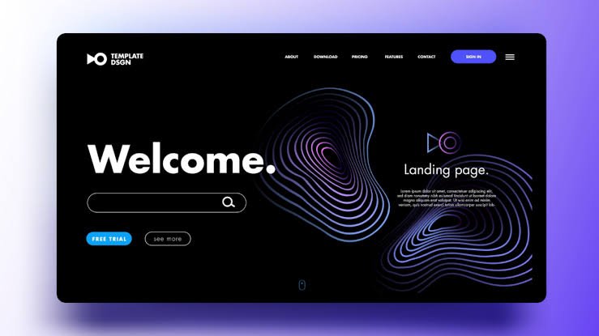
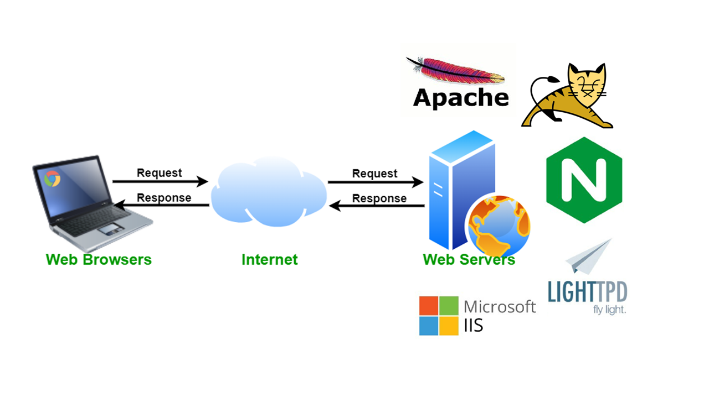
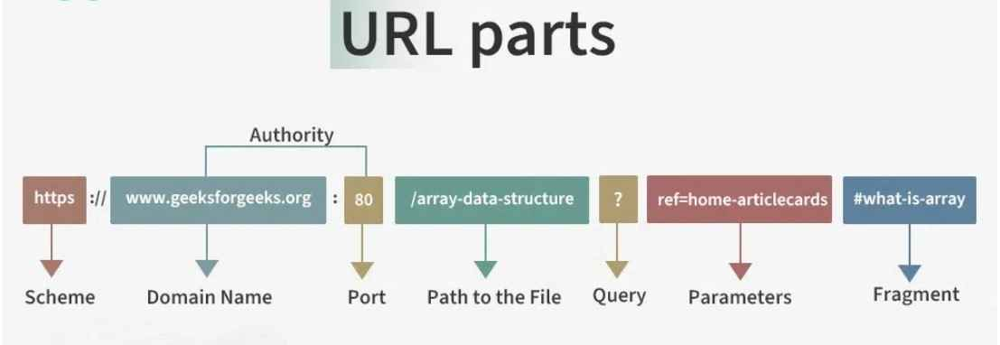
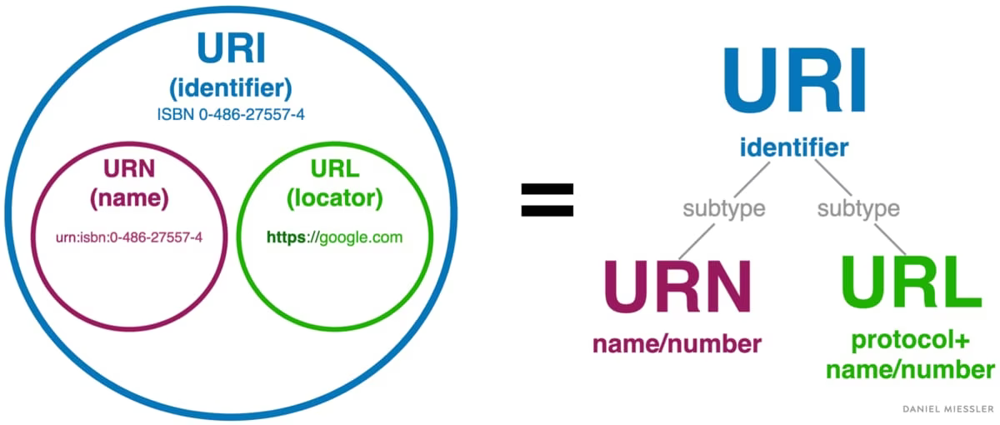
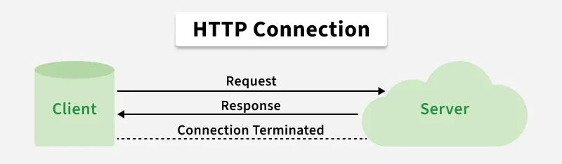
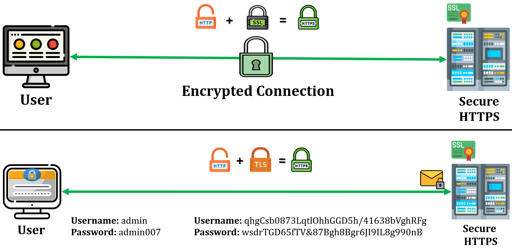
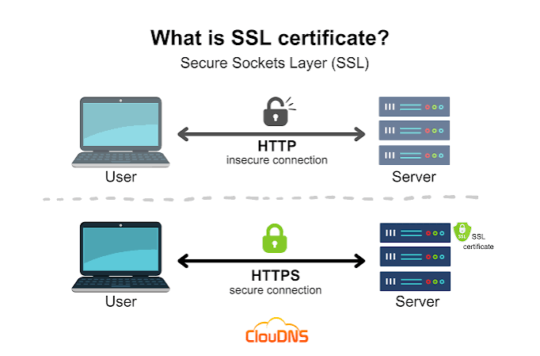
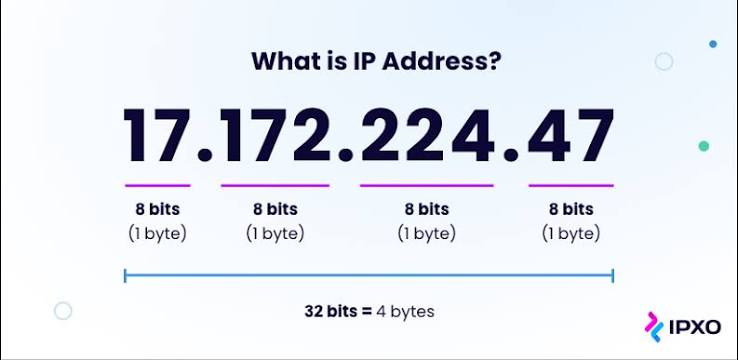
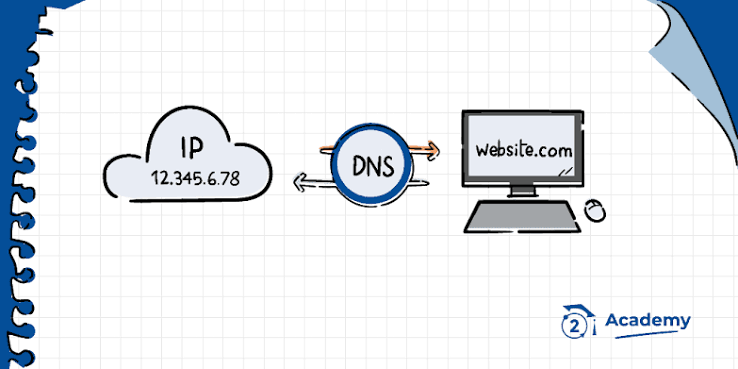
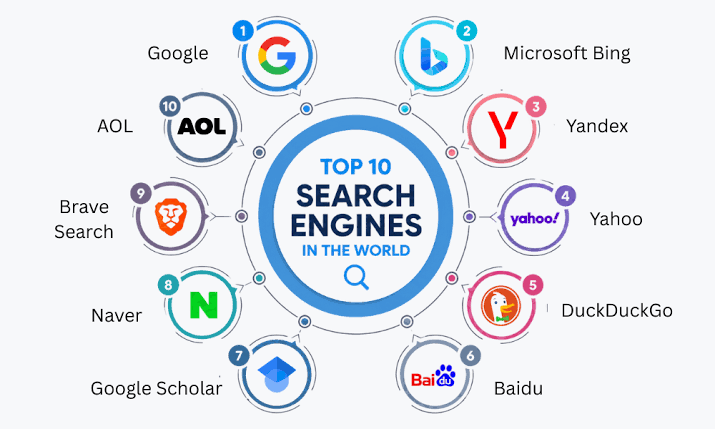

1. The Internet
The Internet is a global network of interconnected computer networks that communicate using standard protocols such as TCP/IP.
Key Milestones:
- ARPANET (1969): One of the earliest operational packet-switching networks and a primary predecessor of today's Internet.
- Connects millions of servers, computers, smartphones, and IoT devices globally.
2. The World Wide Web (Web)
The World Wide Web (WWW) is a system of interlinked, hypertext documents accessed via the Internet.
It was invented by Tim Berners-Lee in 1989.
It relies heavily on key foundational technologies such as HTML, HTTP, URLs, and Web Browsers.
3. W3C World Wide Web Consortium
The W3C is an international community that develops and maintains open standards to ensure the long-term growth of the Web.
Primary Focus Areas:
- HTML & CSS Standards
- Web Accessibility Initiative (WAI)
- Web Architecture guidelines
4. Web Page
A web page is a single document available on the Web, usually written in HTML and formatted using CSS.
Example: https://example.com/about.html
5. Website
A website is a central location containing a collection of related web pages and digital resources published under a common domain name.
Common structure includes: Home page, About page, Contact page, Services page, and Blog pages.
6. Home Page
The home page is the default main or introductory entrance page of a website.
7. Index Page
An index page is the default filename served by a web server when a user requests a directory without specifying a full file path.
- Common file names:
index.html,index.php,index.htm - Note: A home page and an index page are closely related but not strictly identical in technical terms.
8. Landing Page
A landing page is a standalone web page designed specifically for a marketing or commercial campaign. Users usually land here after clicking an advertisement or search link.

9. Web Browser
A web browser is application software used to locate, retrieve, and display content on the World Wide Web.
Popular web browsers include Google Chrome, Mozilla Firefox, Microsoft Edge, and Apple Safari.
10. Web Server
A web server is computer hardware and software that stores web asset files (HTML, CSS, JS, images) and serves them to clients over HTTP/HTTPS.
Common Web Servers: Apache HTTP Server, NGINX, Microsoft IIS.

11. Web Domain
A domain name is a human-readable text string mapped to a numerical IP address to identify a specific web location.
Example: Users type www.example.com instead of remembering raw IP numbers like 93.184.216.34.
12. URL (Uniform Resource Locator)
A URL specifies the precise geographic address of a web resource along with the mechanism used to retrieve it.

13. URI (Uniform Resource Identifier)
A URI is a broad string of characters that identifies a specific logical or physical resource.
A URL is simply a specific type of URI that provides location coordinates.

14. HTTP (HyperText Transfer Protocol)
HTTP is an application-layer protocol for transmitting hypermedia documents across web clients and servers. It operates over default TCP port 80.

15. HTTPS (HyperText Transfer Protocol Secure)
HTTPS is the encrypted extension of HTTP. It secures communications through TLS cryptographic protection over TCP port 443.
- Encryption
- Data Integrity
- Authentication

16. SSL (Secure Sockets Layer)
SSL was an early security protocol designed to encrypt network traffic. Note: SSL is now fully deprecated and has been superseded by modern TLS.

17. TLS (Transport Layer Security)
TLS is the modern, secure cryptographic protocol designed to provide privacy and data integrity for internet communication, powering HTTPS connections.
18. HTML (HyperText Markup Language)
HTML is the standard markup language used to structure web pages and their content elements.
Standard HTML5 Boilerplate:
<!DOCTYPE html>
<html lang="en">
<head>
<meta charset="UTF-8">
<title>Page Title</title>
</head>
<body>
<h1>Hello World</h1>
</body>
</html>19. IP Address
An IP address is a unique numerical identifier assigned to every device connected to a computer network.
- IPv4 Example:
192.168.1.10 - IPv6 Example:
2001:0db8:85a3::8a2e:0370:7334

20. DNS (Domain Name System)
DNS acts as the phonebook of the Internet, translating human-friendly hostnames into machine-routable IP addresses.

21. NSlookup
nslookup is a command-line network administration tool used to query Domain Name System (DNS) records.
Example Command: nslookup example.com
22. Search Engines
A search engine is a web service that uses automated crawlers to index and retrieve web content matching user queries.
Examples: Google, Bing, and DuckDuckGo.

23. ChatGPT
ChatGPT is an AI conversational language system developed by OpenAI. Unlike search engines that index existing web pages, ChatGPT generates responses dynamically based on natural language inputs.
24. Hyperlinks / Links
A hyperlink is a clickable structural element in an HTML document that connects one web resource to another.
HTML Syntax: <a href="https://example.com">Visit Example</a>